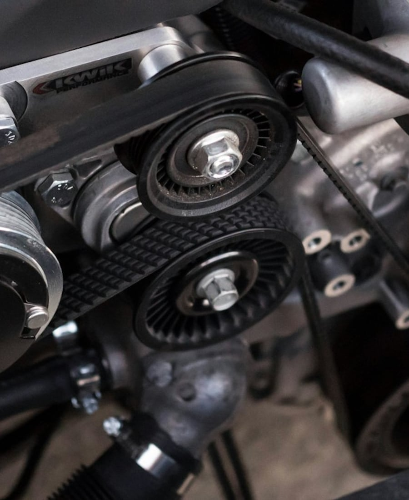
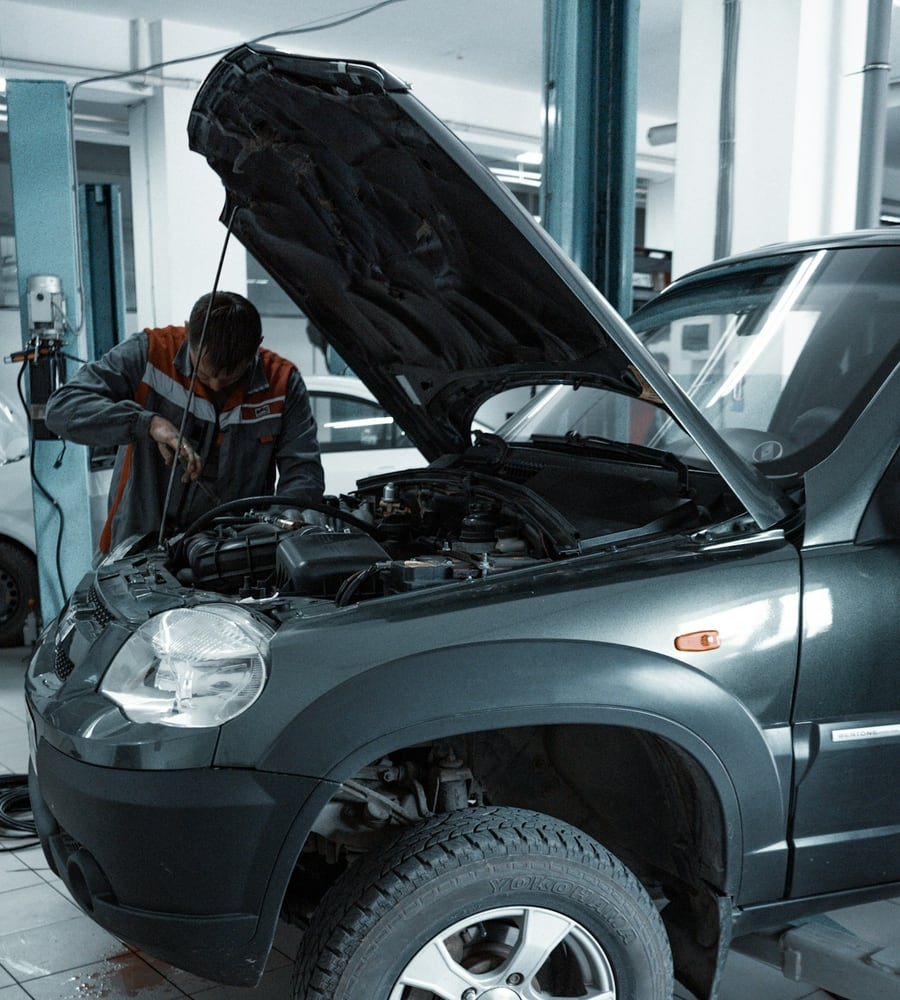

Диагностика
Диагностика
автомобиля
Разберёмся в симптомах и составим понятный план действий.
Фаниполь · ремонт и обслуживание
Понятно объясним, согласуем работы
и подберём удобное время. Всё начинается
с простой записи — без лишних звонков.

Внимание к деталям.Согласуем стоимость
до начала работ
Объясним результат
простыми словами
Запишем на время,
удобное вам
Чем можем помочь
Выберите услугу, чтобы увидеть подходящее время.
Если не уверены — начните с осмотра.
Разберёмся в симптомах и составим понятный план действий.
Регулярная забота о двигателе. Материалы согласуем отдельно.
Проверка системы и необходимые работы после согласования.
Смена шин и балансировка. Стоимость зависит от размера колёс.
Проверка и регулировка углов установки колёс автомобиля.
Запишитесь на первичный осмотр. Вместе определим следующий шаг.
Демонстрационные цены за работу. Запчасти и расходные материалы — отдельно. Итоговую стоимость согласовывает мастер после осмотра.

Хороший ремонт начинаетсяСервис с человеческим лицом
Хотим, чтобы вы понимали, что происходит с автомобилем на каждом этапе.
Уточним жалобу и проверим причину. Обсудим, что нужно сделать сейчас, а что может подождать.
Дополнительные работы и материалы сначала согласуем. Решение остаётся за вами.
После работ расскажем о результате и дальнейших рекомендациях по обслуживанию.
Что можно показать на сайте вашей СТО
Здесь будут ваши фотографии и реальные истории.
Сейчас — примеры оформления, не выполненные заказы.
Место для описания работ, материалов и результата.
Покажите, как мастер нашёл и устранил причину.
Удобное время для вашего автомобиля
Выберите услугу и свободное окно.
Телефон нужен только для связи по заявке.
Можно попробовать прямо сейчас. Это демо: запись тестовая, звонка не будет. Используйте вымышленный номер.
Перед визитом
Да. Выберите «Осмотр перед ремонтом». Мастер уточнит симптомы и определит, какая диагностика нужна.
На сайте указан ориентир стоимости работ. Запчасти и материалы оплачиваются отдельно. Дополнительные работы выполняются после согласования.
Он нужен сотруднику для уточнения деталей визита. В этой демке используйте вымышленный номер: реальные звонки не выполняются.
Нет. Достаточно выбрать время и оставить телефон. После отправки вы увидите подтверждение получения заявки.
Будем на связи
Фаниполь, Беларусь
Демонстрационный сервис — реального адреса нет.
Ваши услуги, фотографии и расписание.
Заявки — в кабинете и Telegram.
Доступ к заявкам защищён паролем.